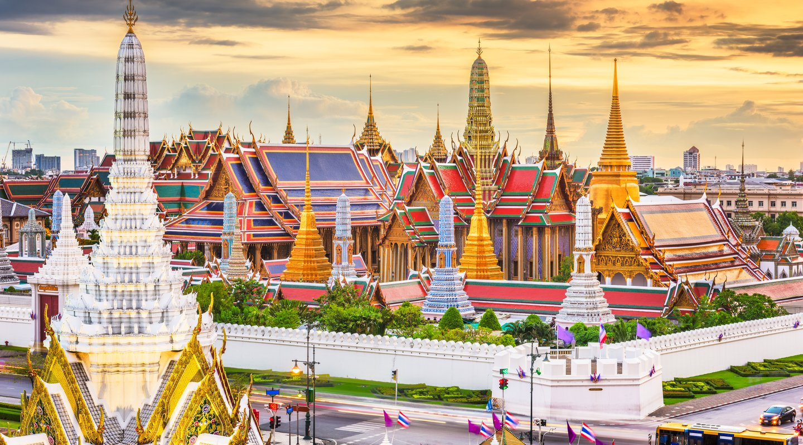

Explorando las calles de París
Descubre los encantos de la ciudad de la luz mientras paseas por sus calles empedradas y visitas sus icónicos monumentos.
París es conocida por su rica historia, su arte y su exquisita gastronomía. No te pierdas la Torre Eiffel, el Louvre, ni los deliciosos croissants en una de sus encantadoras cafeterías.
Leer más

Aventuras en el Amazonas
Sumérgete en la exuberante selva del Amazonas y vive una experiencia única rodeado de una biodiversidad impresionante.
El Amazonas ofrece una variedad de actividades emocionantes, desde excursiones en canoa por los ríos hasta caminatas por la selva para observar la fauna y la flora autóctonas.
Leer más

Un fin de semana en Nueva York
Disfruta de la vibrante energía de la Gran Manzana mientras recorres sus barrios, teatros y famosos puntos de interés.
Nueva York es una ciudad que nunca duerme, con una variedad de atracciones y actividades para todos los gustos. Visita Central Park, Times Square y la Estatua de la Libertad
Leer más

Explorando los templos de Tailandia
Sumérgete en la rica cultura tailandesa mientras visitas sus impresionantes templos y te maravillas con su arquitectura única.
Leer más

Explorando la metrópolis de Tokio
Sumérgete en la cultura y la tecnología de la vibrante ciudad de Tokio, donde la tradición se encuentra con la modernidad.
Tokio ofrece una mezcla única de templos antiguos, rascacielos futuristas, mercados bulliciosos y deliciosas experiencias gastronómicas. No te pierdas el barrio de Shibuya, el mercado de pescado de Tsukiji y el templo Senso-ji en Asakusa.
Leer más
 Auroras Boreales
Auroras Boreales Lago Moraine
Lago Moraine